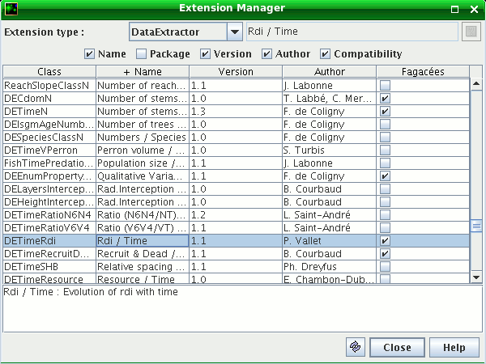

Consultation de la liste des extensions de la plate-forme (fig. 1). Personnalisation possible de la compatibilité des extensions par vétos ou liste exhaustive d'extensions compatibles pour un modèle considéré. Accès par menu Outils > Gestionnaire d'Extensions.
Choisissez un type d'extension dans la liste déroulante, cochez les noms de colonnes que vous souhaitez voir apparaître. Cliquez ou Ctrl-cliquez sur l'entête d'une colonne pour trier la liste par ordre croissant / décroissant sur cette colonne.
Sélectionnez une ligne dans la table pour obtenir la description précise d'une extension, si une aide en ligne est disponible pour cette extension, l'icône verte Aide en haut à droite permet de l'afficher.
 Fig. 1. Le Gestionnaire d'Extensions Graphique montrant les extensions de type “Outil Modèle” (ModelTool), les deux premières sont compatibles avec le modèle Fagacées
Quand un nouveau projet est chargé dans le gestionnaire de projets, une nouvelle colonne est ajoutée pour le modèle attaché au projet. Si plusieurs projets sont ouverts (fig. 2), il y a une colonne par modèle (ex: 2 projets Ventoux et 1 projet PP3 correspondent à 2 colonnes : Ventoux et PP3).
Note : Si le Gestionnaire d'Extensions Graphique est déjà ouvert lors de l'ouverture / fermeture de projet, utilisez le bouton “Rafraîchir” pour le mettre à jour.
Les extensions de la plate-forme savent évaluer leur compatibilité par construction avec un objet référent qui leur est communiqué. Le type de cet objet référent dépend du type de l'extension. Ainsi par exemple, les Extracteurs de données et les Mémoriseurs ont un référent de type GModel (compatibles avec un modèle), alors que les Rendeurs de données ont un référent de type Extracteur de données (compatibles avec une autre extension).
Fig. 2. Deux colonnes Compatibilité : le modèle Ventoux est géré par Vétos et PP3 est géré par Liste
Par un clic droit sur la colonne de compatibilité d'un modèle, on accède au menu contextuel Compatibilité qui propose de gérer la compatibilité de façon personnalisée pour ce modèle.
Compatibilité automatique : laisse les extensions évaluer leur compatibilité par construction (option par défaut).
Personnalisation par vétos : permet de poser des vétos sur des extensions qu'on souhaite désactiver pour le modèle considéré. Cette option est valable pour toutes les extensions (compatibles avec tous types de référents). Les extensions avec véto n'apparaitront pas dans les listes d'extensions proposées à l'utilisateur par l'interface graphique pour le modèle considéré.
Quand cette option est activées, le texte (Vetos) est ajouté dans l'entête de la colonne, il est alors possible d'ajouter / supprimer des vétos avec le menu contextuel Compatibilité. Les vétos sont enregistrés dans un fichier extension.veto dans le répertoire du module (ex: capsis4/bin/pp3/extension.veto). Pour les extensions qui comportent un véto, le texte Veto apparaît dans la colonne Compatibilité.
Personnalisation par liste : permet d'établir une liste exhaustive des extensions compatibles avec un modèle donné. Ce mode de personnalisation garantit que les nouvelles extensions créées par la communauté Capsis ne rentreront pas dans la liste des extensions compatibles avec le modèle. Il peut être intéressant pour la diffusion d'un modèle à des utilisateurs, constituant une sorte de profil stable.
Une fois l'option activée, le texte (Liste) est ajouté dans l'entête de la colonne, on peut alors utiliser le menu contextuel Compatibilité pour inclure / exclure des extensions dans la liste. La liste est enregistrée dans un fichier extension.list dans le répertoire du module (ex: capsis4/bin/ventoux/extension.list). Pour les extensions qui sont dans la liste, le texte Inclus apparaît dans la colonne Compatibilité.
Note : pour la gestion des vétos et des listes, il est possible d'agir sur plusieurs lignes à la fois en les sélectionnant préalablement dans la table, utiliser Ctrl-Clic et Shift-Clic, ou encore Ctrl-A pour tout sélectionner.
Le choix des options de compatibilité (automatique, vétos, liste) est mémorisé à la fermeture de Capsis est rétabli au lancement suivant. En cas de démarrage avec le paramètre -nooptions ou de premier démarrage sur un nouveau poste après installation, les priorités suivantes sont respectées pour déterminer les compatibilités pour chaque modèle : (1) recherche d'un fichier extension.list, (2) si non trouvé, recherche d'un fichier extension.veto, (3) sinon, utilisation du système de compatibilité par défaut des extensions.